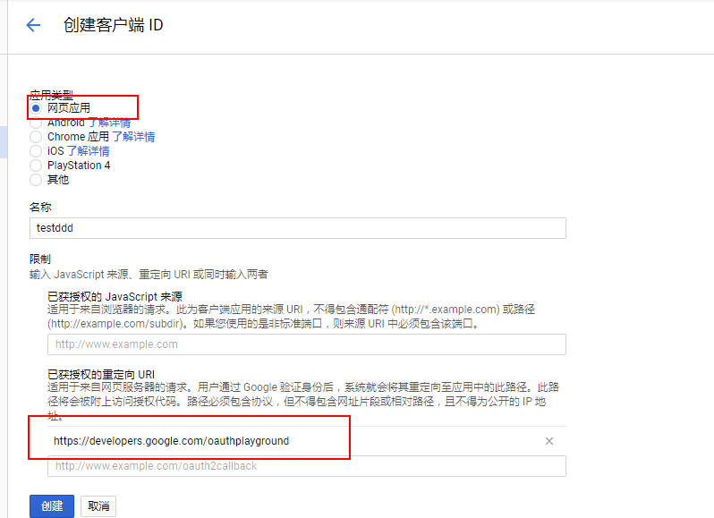
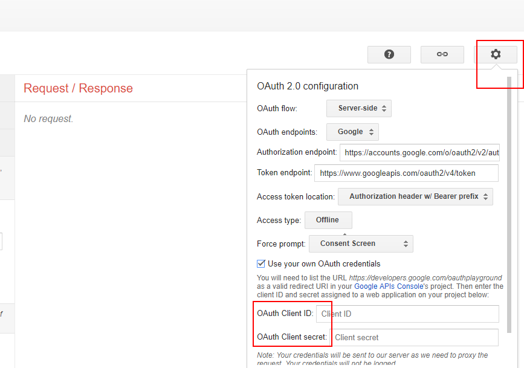
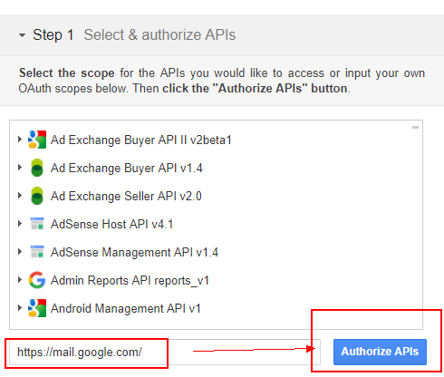

前段时间有个很普通的项目需要发邮件的功能，而且是刚开始学nodejs，所以只是搜索了下用什么好的库能实现，就找到了nodemailer了。这篇文章主要是记录一下使用的过程和经验。
如何使用
这里就先上配置
nodejs: v6.9.4
npm: 3.10.10
nodemailer: ^4.1.0
const params = {
host: 'smtp.163.com', // 设置服务
port: 465, // 端口
sercure: true, // 是否使用TLS，true，端口为465，否则其他或者568
auth: {
user: config.user, // 邮箱和密码
pass: config.emailPwd
}
}
// 邮件信息
const mailOptions = {
from: config.user, // 发送邮箱
to: config.emailTo, // 接受邮箱
subject: config.title, // 标题
html: config.html // 内容
}
// 发送邮件
const transporter = nodemailer.createTransport(params)
transporter.sendMail(mailOptions, (error, info) => {
if (error) {
return console.log(error);
}
console.log('Message %s sent: %s', info.messageId, info.response);
// success
// ...
})
按照这个格式，发送成功是没什么问题的。不过在密码这里要注意，不是邮箱的登录密码。
163和qq获取授权码
163邮箱的话，要开启POP3/SMTP服务，在设置 –> POP3/SMTP/IMAP页面，设置。开通后会有个授权码的，配置里的密码，就是用这个授权码
qq邮箱的话，同样也要开启这个服务，设置 –> 账户 –> POP3服务，点击开启，就会有个授权码，如果忘了记录，在开启服务下面有个“生成授权码”的，可以获取到的。
这样qq和163就能开启了
Gmail
如果是Gmail的话，这个就有点麻烦了，在nodemailer官网也有说到：
Gmail either works well or it does not work at all. It is probably easier to switch to an alternative service instead of fixing issues with Gmail. If Gmail does not work for you then don’t use it.
我这里用自己的谷歌邮箱试了下，在上面的配置修改一下
const params = {
service: 'Gmail', // 注意，host修改为service
port: 465, // 端口
sercure: true, // 是否使用TLS，true，端口为465，否则其他或者568
auth: {
user: config.user, // 邮箱和密码
pass: config.emailPwd
}
}
如果这样不行的话，打开这个链接，开启谷歌允许不够安全应用
如果还不行的话，就要配置谷歌的XOAuth2了
配置XOAuth2
就算使用了这种方法，也未必可能成功
在这里创建一个凭据，选择OAuth客户端ID，应用类型选择“网页应用”，然后填写名称，重定向URI要记得填写，我填写的是这个”https://developers.google.com/oauthplayground“

然后记录下id和密钥

填写之前的id和密钥
然后就是step1，选择api

到step2，点击’Exchange authorization code for tokens’按钮，生成token，这样就完成了。
回到nodejs，重写下配置
const params = {
service: 'Gmail',
auth: {
type: 'OAuth2',
user: config.user,
clientId: config.clientId,
clientSecret: config.clientSecret,
refreshToken: config.refreshToken,
accessToken: config.accessToken
}
}
nodemailer其他功能
这里列出我自己用过的功能，nodemailer看官方介绍，貌似是很多功能的
发送多个用户：
// 在配置发送信息的时候
const mailOptions = {
from: config.user, // 发送邮箱
to: config.emailTo + ', ' + config.emailTo2, // 用', '分隔
subject: config.title, // 标题
html: config.html // 内容
}
发送html内容
const mailOptions = {
....
html: config.html // 这里可以是html字符串
}
发送附件
可以同时发送多个
const mailOptions = {
…
attachments: [{
filename: ‘test.txt’,
content: ‘hello world!’
},{
filename: ‘test.txt’,
content: ‘hello world!’,
contentType: ‘text/plain’
}]
}
官方给出的配置
- filename - filename to be reported as the name of the attached file. Use of unicode is allowed.
- content - String, Buffer or a Stream contents for the attachment
- path - path to the file if you want to stream the file instead of including it (better for larger attachments)
- href – an URL to the file (data uris are allowed as well)
- contentType - optional content type for the attachment, if not set will be derived from the filename property
- contentDisposition - optional content disposition type for the attachment, defaults to ‘attachment’
- cid - optional content id for using inline images in HTML message source
- encoding - If set and content is string, then encodes the content to a Buffer using the specified encoding. Example values: ‘base64’, ‘hex’, ‘binary’ etc. Useful if you want to use binary attachments in a JSON formatted email object.
- headers - custom headers for the attachment node. Same usage as with message headers
- raw - is an optional special value that overrides entire contents of current mime node including mime headers. Useful if you want to prepare node contents yourself
总结
刚使用nodemailer踩了不少坑，弄了我一天，Gmail不怎么稳定，后面主管就叫换成qq了，据说qq企业邮箱发送邮件的次数比较多。这篇文章就是记录下使用nodemailer的一些经验。